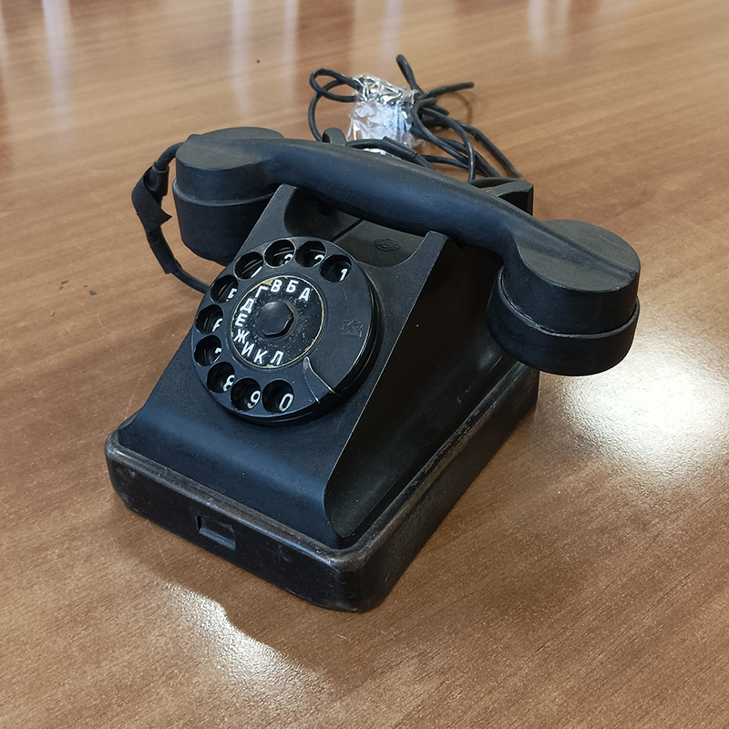

Aritmómetro "Félix"
El aritmómetro más común en la Unión Soviética. Nombrado en honor a Félix Dzerzhinski. Se produjo desde 1929 hasta 1978 con una tirada total de varios millones de máquinas. Se crearon más de una docena de modificaciones del aritmómetro. Esta máquina de cálculo es una variante del aritmómetro de palanca de Odner. Permite trabajar con operandos de hasta 9 dígitos y obtener respuestas de hasta 13 dígitos.
Teléfono "VEF"
Se produjeron diferentes modelos de teléfonos, desde los clásicos con dial y timbre mecánico hasta teléfonos modernos con teclas y memoria para varios números y otras funciones de servicio. La fábrica fabricó tanto teléfonos para redes normales como para redes institucionales.
Teléfono "BRATEK"
Teléfono compacto de pared en una carcasa de plástico rojo con detalles en negro. El auricular cuelga sobre el dial del número de disco. Una característica de este modelo es que el disco transparente tiene muescas en lugar de agujeros sobre los números del dial. Características de uso: conexión según el esquema "Director-Secretario", conexión de dos hilos y conexión en paralelo mediante dispositivos de diodo para separar circuitos, desconexión "sin interrupciones" del dispositivo de la línea de abonado y conexión a un enchufe adicional.
Teléfono "BAGTA-50"
Teléfono de sobremesa producido en la Unión Soviética en la Fábrica Estatal de Electrotécnica de Riga (VEF). Fue el teléfono más común de la posguerra. Los mejores especialistas de todo el país trabajaron en él. El teléfono de sobremesa VEF "Bagta-50-ATC" consta de un auricular y una carcasa en cuyo interior se encuentran dispositivos de llamada, dispositivos de conmutación, elementos y unidades adicionales relacionados con el funcionamiento del dispositivo y su esquema.

Radioteléfono "Harvest HT-7"
El radioteléfono Harvest HT-7 tiene un gran alcance y un tamaño pequeño del auricular, lo que atrae a un amplio público. Puede proporcionar un alcance de 500 m a 10 km. La característica sorprendente es que para ampliar el alcance de 10 km a 40 km, solo es necesario instalar una antena externa y un amplificador. Una base HT-7 puede atender hasta 8 auriculares, y un auricular puede funcionar en dos bases.